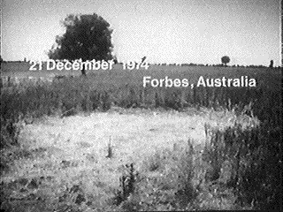
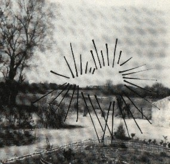
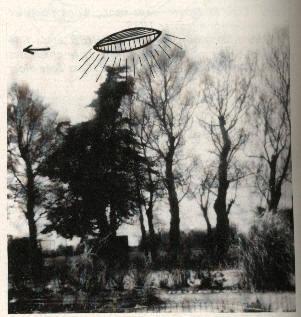

"Nid de soucoupe" à Forbes (Australie) le 21

La ferme Frank Schiefelbein (village de North Kingston, comt� de
Meeker, Minessota) signale qu'une de ses vaches (Black Angus de 800 kg) a été retrouvée
mutil�e, "presque" au sommet
d'une colline : les babines de la b�te sont d�coup�es à 2,5 cm environ au dessus du nez jusqu'� l'arri�re gauche de
la machoire, la langue a été arrach�e et la veine jugulaire fendue. Il n'y a que l'�quivalent d'un verre de sang sur
le sol. Le bord de l'oreille gauche, les organes g�nitaux (et 4 pis ?) sont également absents. On notera aussi des
coupures horizontales à l'intérieur du rectum. Il n'y a aucun signe d'all�es et venues dans la zone et on ne
découvre qu'une simple tâche "circulaire" dans la neige UFO Investigator (NICAP), f�vrier 1975 < Smith, M.: "Animal Mutilations", The UFO Enigma, 1983.
Le Dr. Nelson (v�t�rinaire) prôlevera des échantillons de peau, de sang, et de foie pour des analyses à l'Universit�
du Minnesota, qui concluera que la mort de l'animal remontait à 12 h avant, sans pouvoir d�terminer sa cause Sider, J.:. Le NICAP suivra cette affaire en
�ditant une lettre �crite par 2 personnes qui men�rent par la suite des enquêtes sur le sujet, l'un étant de NICAP et l'autre de l'APRO.
Ils trouvérent que la simple tâche circulaire n'était pas circulaire du tout et qu'elle était en fait de
forme irrégulière, provoqu�e par la neige tass�e par le restant du b�tail qui était venu renifler le corps. Ils en
conclurent que la mutilation faisait partie de rites d'initiation pour un culte satanique, dont les membres furent
arrêt�s par les autorit�s f�d�rales. Ce culte s'était déplacé dans différentes régions du pays et était responsable
de tous les actes de mutilation ayant fait l'objet de rapports Cornett, Robert C. &
Randle, Kevin Douglas. Feedback, Readers Write-Re : Cattle Mutilation in Minnesota.
NICAP, UFO Investigator, mai 1975 : 4.
"Nid de soucoupe" à Forbes (Australie) le 21

Lancement de Saliout 4.
A Chateauneuf (Vend�e), alors que sa famille s'appr�te à se
coucher, MmePoirier veut sortir son chien avant la nuit tandis que son
mari, sa fille (une vingtaine d'années) et son fils sont dans leurs chambres. Le chien a une réaction bizarre,
craintive et refuse de sortir malgré l'insistance de la femme. C'est alors que, ouvrant la porte d'entr�e, elle
découvre que l'alentour est �clair� comme en plein jour par 2 "grosses lumières" qui lui paraissent posées dans
un champ en face de la maison, à 400 m.
"Nid de soucoupe" à Forbes (Australie) le 21

Elle appelle alors vivement le reste de la famille, et c'est sa fille qui arrive la 1ʳᵉ (son mari arrivera trop
tard) pour observer avec sa m�re le passage de l'ovni en forme de "cigare" de 10 m de large environ, d'un orange
lumineux pour sa partie inf�rieure et d'un bleu mat pour sa moiti� supérieure. Il n'y a aucun bruit. L'ovni
demeure immobile 20 s environ au dessus d'un sapin avant de partir à une vitesse fulgurante. Ainsi se termine
l'observation. La m�re en sera considérablement marqu�e les jours suivants et fera venir un m�decin de
Beauvoir-sur-Mer qui diagnostiquera un "coup de froid". La femme conservera le lit durant une semaine, très
faible et se remettra doucement. Le chien qui refusa de sortir ce soir la garda cette crainte par la suite et ne
s'�loigna plus gu�re de la maison.